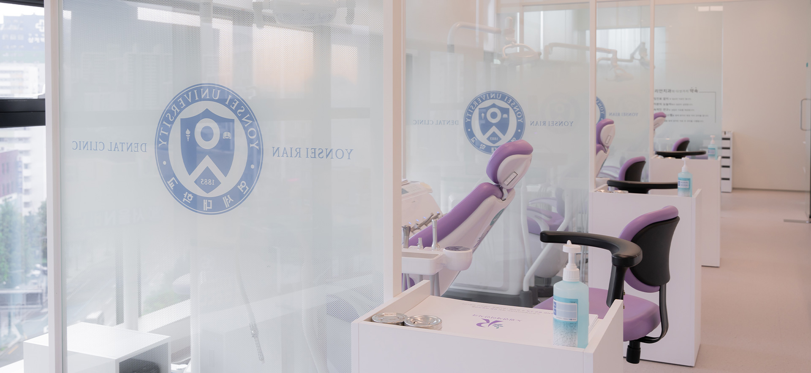
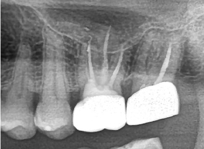

신경치료

신경치료란?
치아의 신경 가까이 충치가 생겼거나 치아에 금이 간 후 통증이 심하거나,
신경관 감영으로 인한 뿌리 끝 염증시, 또는 치아 삭제시 신경에 매우 근접한 경우,
신경 조직을 제거하고 충전재료로 매꿔 치아의 기능을
유지, 보존하도록 하는 치료입니다.
신경 치료 과정
1
충치 제거
2

근관에 접근하기 위해
구멍을 뚫음
3
근관 내부 혈관 신경 등
제거 및 소독
4
정리된 근관 내부
5
내부를 메꿔 본을 뜸
6

치아를 다듬고
크라운으로 씌움
신경 치료 전후
Before

After
Before
After
신경치료 시 특이 사항
신경치료는 '통증'이 가장 주된 두려움의 요인입니다.
연세리안치과에서는 도포마취제, 가글 마취액, 무통마취기를
사용하여 최소 통증 치료를 시행합니다.
신경치료는 한번에 끝나지 않고 대부분 3~5회의 과정이 필요합니다.
회당 국민건강보험 적용을 받는 진료비가 산정됩니다.
신경치료를 받은 치아는 장기적으로 푸석해지므로 치아를 보호해주어야 합니다.
따라서 신경치료가 끝난 뒤에는 크라운 치료가 진행됩니다.
신경치료를 받은 이후에 감각 또는 통증이 남아 있을 수 있습니다.
정도에 따라 경과를 지켜보며, 증상이 심할 경우에는 발치를 요할 수 있습니다.